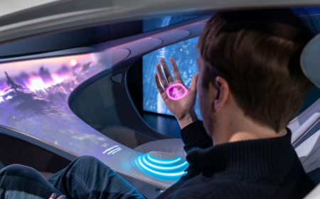
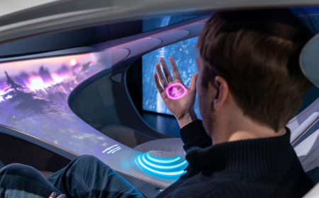

The VISION AVTR
Inspered by the future
Inspered by the future

At the CES 2020 exhibition, a new conceptual Mercedes-Benz – VISION AVTR was presented. The futuristic concept of the presented electric car uniquely combines humans, nature, and the automobile.
Ola Källenius, Chairman of the Board of Management of Daimler AG and Mercedes-Benz AG, presented the concept car together with Oscar-winning filmmaker and creator of the movie Avatar, James Cameron, during his speech.
The philosophy created by the cult director in the fantastic movie became the basis for the creation of VISION AVTR


"Mercedes-Benz has always been one of the most technologically advanced premium brands. Now is the time to combine luxury and environmental friendliness. After all, only in this way can we meet the standards of the future."

VISION AVTR design embodies ecological principles.
The innovative concept of VISION AVTR combines ecological interaction of interior, exterior, and UX design. The entire design process was focused on a specific outcome – an unparalleled experience of interaction and perception of the concept car by the driver and passengers. It aimed to create a unique space where passengers have a biometric connection with each other, with the vehicle, and with the surrounding world.
The side outer orifice passes through the inner part and creates an infinite loop, the prototype of which was the sacred bond between the Na'vi people in the movie Avatar and their natural habitat." "Additionally, thanks to the elongated design of the 'One Bow' and the organic design philosophy, the VISION AVTR demonstrates a radically new stage in automotive engineering. Thus, by following the path from the concept of mindfulness to the unique fusion of human and automobile, Mercedes-Benz engineers have succeeded in creating the conceptual electric car VISION AVTR.

The front seats, designed in a highly organic form reminiscent of leafy hammocks from the planet Pandora, are a succinct continuation of the external minimalist design. The central console symbolizes the Tree of Souls, the most sacred place of the Na'vi. The control panel is intuitively understandable and incredibly functional.


 

The control center is positioned in such a way that it is easily accessible for both the driver and the passenger, as well as for rear passengers
Thus, VISION AVTR establishes a close biometric connection with the driver and helps increase awareness of the surrounding situation.
The rear part of the seats and the interior roof lining are made of a special fabric that changes color. Depending on the lighting, the textile can be dark blue or light baby blue
The ecological friendliness of the electric car's interior is further enhanced with the use of vegetarian DINAMICA® leather – the first and only microfiber that guarantees environmental efficiency throughout the entire production cycle.
DINAMICA® is a recycled material made from old clothes, fabrics, and PET plastic bottles.